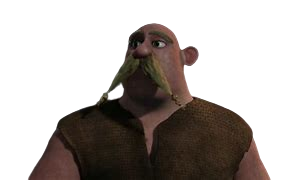

L'habitant taciturne de Beurk
| Rôle | Habitant de Beurk |
| Affiliation | Tribu de Beurk |
| Particularité | Ne parle jamais, mais ses expressions disent tout |
Sven le Silencieux est un habitant de Beurk qui, comme son surnom l'indique, ne parle pas. Son personnage muet est souvent utilisé pour des gags visuels - ses expressions faciales et sa gestuelle en disent plus que les mots. Malgré sa discrétion, il est un membre fiable de la communauté de Beurk.